Overview
The first pipeline made good-looking heads. Put twenty of them in one level and the editor slowed to a crawl. This episode is the audit that found out why, and the rebuild that cut every hero roughly in half without changing a face.
Part 1 measures what was wrong: triangle counts, missing levels of detail, hair cards stacked up to ten deep, and the small flaws that only show up close. Part 2 is the fix: a low-poly pass that kept all 52 facial shapes, six hair rules the tools now check on their own, a ten-step review per hero, and a final hair and clothing system built for a crowd.
Chapters
Click a chapter to jump the player to that point.
The studio: hardware
Every step in the series runs on one desktop. The game itself targets a standard gaming PC, so all budgets in this episode are set for that standard PC.
| Part | Spec |
|---|---|
| GPU | NVIDIA RTX 5090, 32 GB VRAM |
| CPU | Intel Core Ultra 9 285K, 24 cores |
| Memory | 64 GB DDR5-6000 |
| Motherboard | Gigabyte Z890 |
| System drive | 2 TB WD Black NVMe |
| Project drive | Samsung T9 portable SSD, so the project moves between machines |
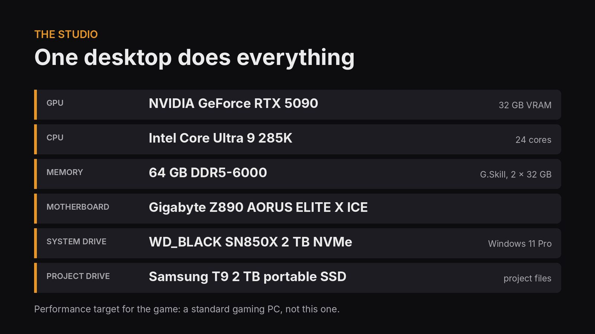
Software and tools
| Tool | Used for |
|---|---|
| Blender 5.2 | Modelling, rigging, hair, textures, low-poly reduction, garment building |
| Unreal Engine 5.8 | The game: import, materials, levels of detail, in-level review |
| Claude | Drives Blender and Unreal through MCP, writes and runs every batch script, keeps the records |
| Blender MCP and Unreal MCP | Connections that let Claude run Python inside the open Blender and Unreal editors |
| KZ Python toolset (Unreal) | Our own editor plugin: run_python, run_python_file, project info, git from the editor |
| Trellis.2 | Image-to-3D heads |
| Meshy | Source meshes for the base bodies |
| AI image generators | Portraits, four-view sheets and hair references |
| MakeHuman | Animation-ready face topology |
| Python (numpy, scipy, trimesh) | Cloud batch work: audits, shell builder, hair rules, texture fixes |
| Git with LFS | Every automated batch is committed before and after it runs |
| Kawaii Physics | Cloak and cape simulation in Unreal |
| OBS and Filmora | Recording and editing the episodes |
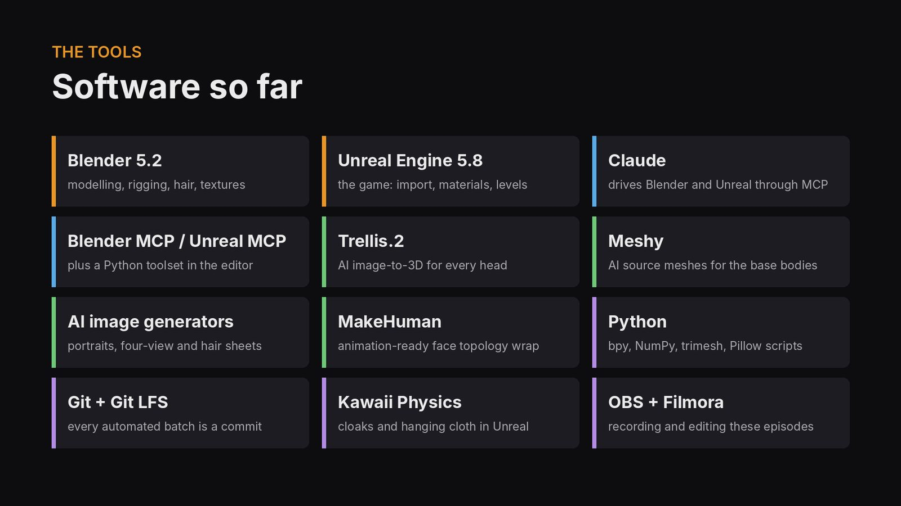
Part 1: what we found
01Where we started
The first pipeline: a four-view reference per character, an AI image-to-3D head, a MakeHuman topology wrap so the face could animate, and hair grown as cards from the reference sheet. Every character shared one standard body. Episode 1 shows this pipeline on Cynan.
It worked. Sixteen heads were built and nine were in Unreal, and up close they looked right. The trouble started with several of them in a level together.
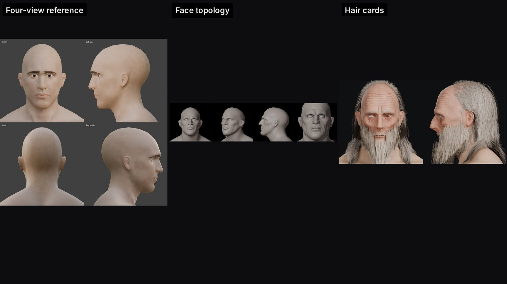
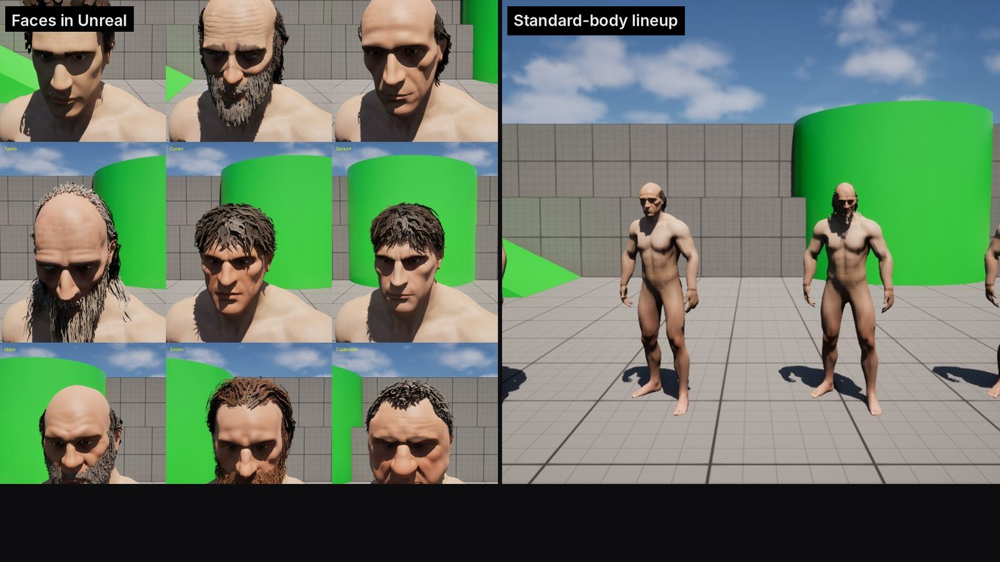
02The audit
The editor slowed down with only a few characters loaded, so everything was counted: every mesh, every texture, every material slot, measured from the export files. The yardstick was Epic's MetaHuman level-of-detail specification, since it is the published budget for realistic characters in Unreal.
| Item | Ours (full detail) | MetaHuman budget | Result |
|---|---|---|---|
| Body | 17,422 verts / 34,778 tris, 4 bone influences | 30,500 verts, 8 influences | Pass |
| Head | about 13,100 verts / 26,000 tris, 52 morphs | 24,000 verts | Pass |
| Eyes, teeth, gums, tongue, lashes | 8,400 tris | part of head | Pass, but wasteful at distance |
| Hair cards | 9,800 to 26,000 tris | about 10,000 verts | 1.5 to 3 times over |
| Beards | 1,000 to 26,700 tris | 500 to 10,000 verts | Three characters over |
| Levels of detail (LODs) | none | 8 head, 4 body, 8 hair | Missing |
| Textures per unique head | about 43 MB at 4096 px | up to 8192 on high-end PC | Heavy for 20 characters |
Per character: 84,000 triangles (Tudwal, the lightest) to 105,670 (Wulfstan, the heaviest), 93,000 on average. Twenty on screen: about 1.9 million triangles and 120 to 140 draw calls before shadows, plus 0.7 to 1.0 GB of unique textures. The faces, rigs and skin weights all passed. The cost was in hair, missing LODs and textures.
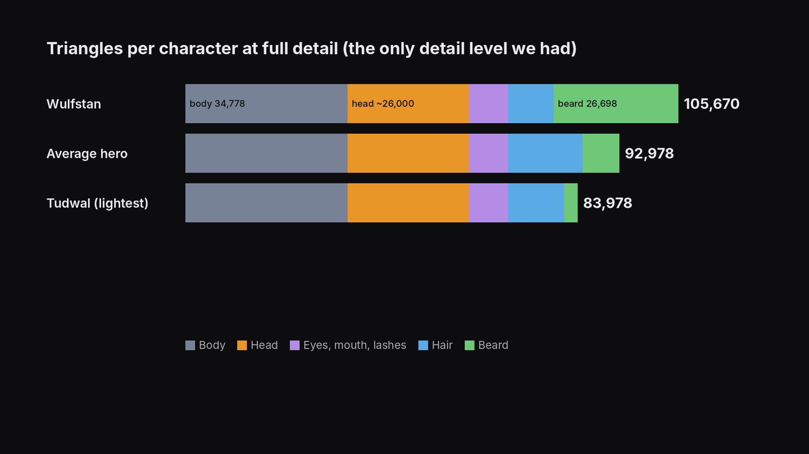
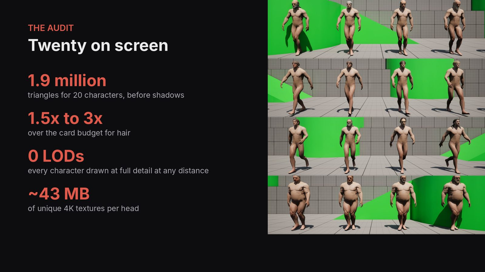
03The cost of hair
Wulfstan's approved hair and beard alone were 36,492 triangles. Hair cards are see-through layers, and ours stacked seven to ten deep over every point of the scalp. Every layer is drawn for colour, for depth and again for shadow, so the cost multiplies. This is called overdraw, and it made hair the most expensive thing on screen.
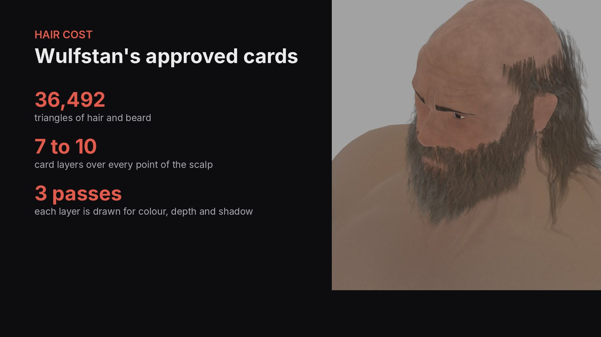
04Close-up flaws
Looking closely turned up a second list:
- A seam at the wrist where the hand texture met the arm, like a bracelet.
- Hair sitting over the ears instead of around them.
- Hair edges floating above the skin.
- Caps that looked like helmets: straight slopes and no natural volume.
- Gaps between the hair and the back of the neck.
- Beards covering the mouth opening by up to 2.3 cm.
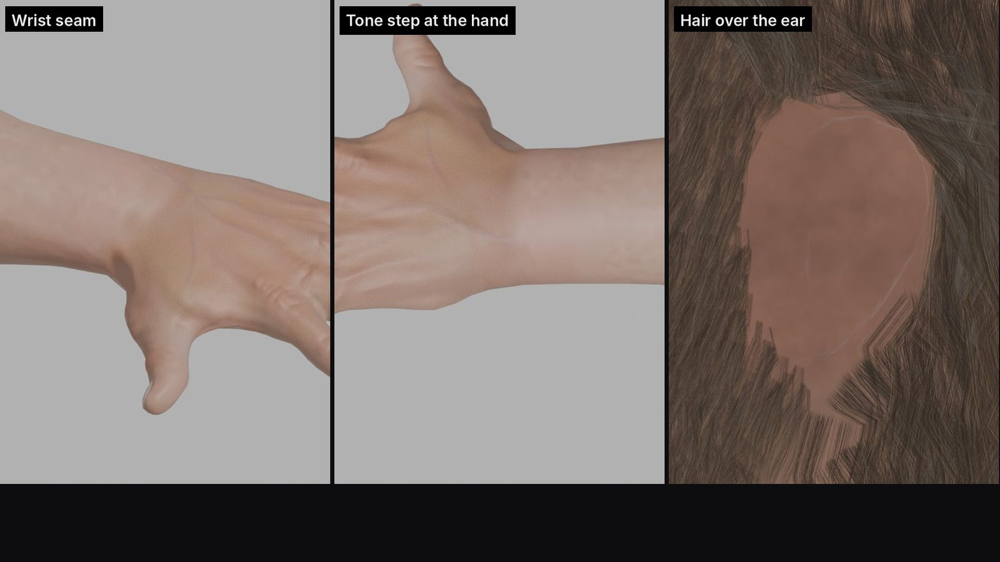
Part 2: how we rebuilt it
05Lighter characters
The goal: the same faces, with all 52 facial shapes intact, at about half the triangles.
The hair test came first. On Wulfstan, the approved cards (36,492 triangles) were compared with a single textured shell that follows the scalp, at about 4,000. That is about 89 % less, and from normal game distance it holds up. The owner compared three versions (shell with cards, shell with a bottom fringe, shell only) and picked shell only as the new plan at that stage.
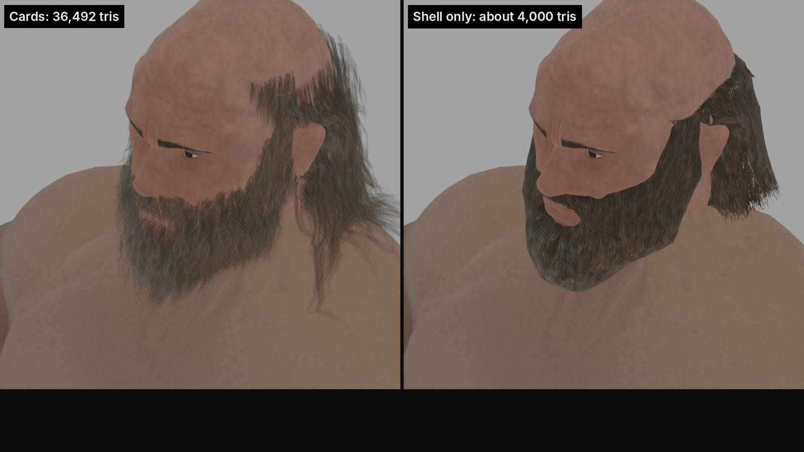
Then the low-poly pass on the whole character:
- Head: a morph-preserving reduction that keeps all 52 ARKit keys. Heads settled around 17,700 triangles.
- Mouth parts: dental arches of 280 triangles each, tongue 150, eyes 736 each, lashes 272.
- Body: reduced with joint weighting, so elbows, knees and shoulders keep their density. Standard body 34,778 to 22,952.
- Hair and beard: textured shells, about 2,300 and 1,700 triangles.
| Character | Head | Hair | Beard | Total with body |
|---|---|---|---|---|
| Bedwyr | 17,714 | 2,316 | 1,700 | 47,136 |
| Cynan | 17,698 | 2,308 | none | 45,412 |
| Owain | 17,674 | 2,324 | none | 45,402 |
| Brother Tysilio | 17,738 | 2,397 | 1,706 | 47,247 |
| Tudwal | 17,698 | 2,429 | 608 | 46,141 |
| Einion (large body) | 17,938 | 2,375 | 1,708 | 47,427 |
| Iddon (large body) | 17,938 | 2,320 | 1,699 | 47,363 |
Every head export was checked: 7 meshes, 134 bones, 52 keys, at most 4 influences per vertex and 0 unweighted vertices. Wulfstan went from 105,670 to 47,344. A typical hero went from about 93,000 to about 45,000.
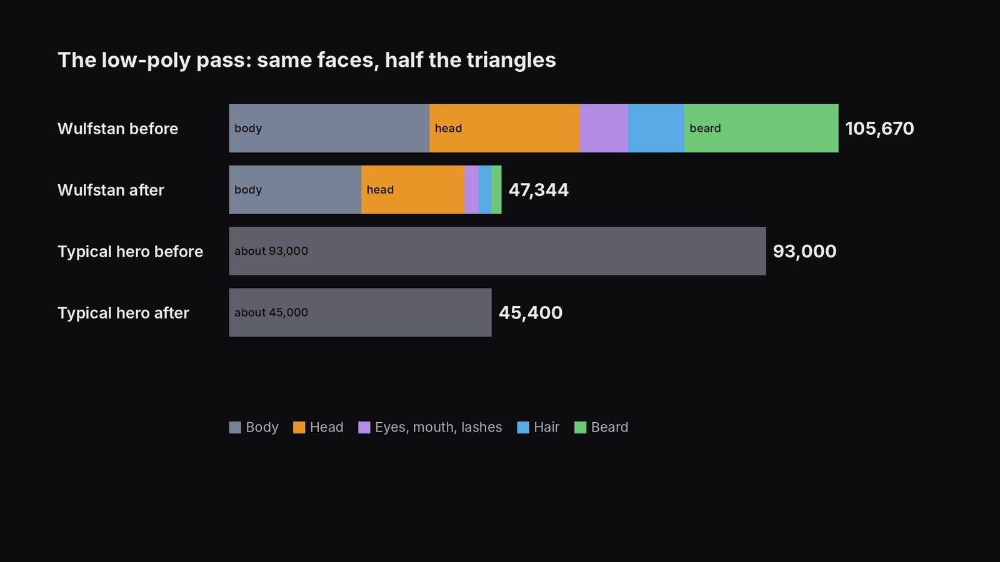
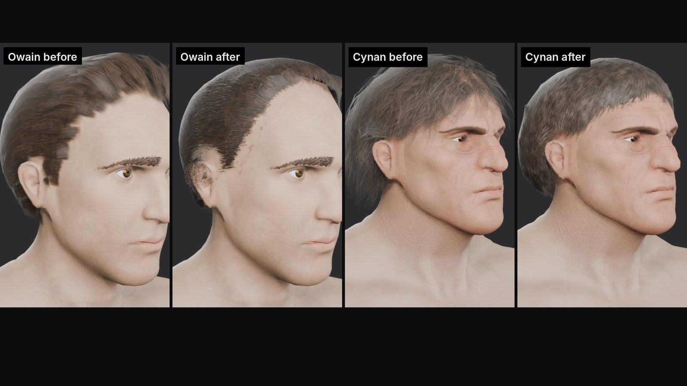
Background characters were cut harder, to 66 %: peasants, Neanderthals and the undead. An importance map protects the face (head, jaw, lips and brows weighted at 0.6) while the rest collapses. The full mesh is kept hidden in the file so any character can be reverted.
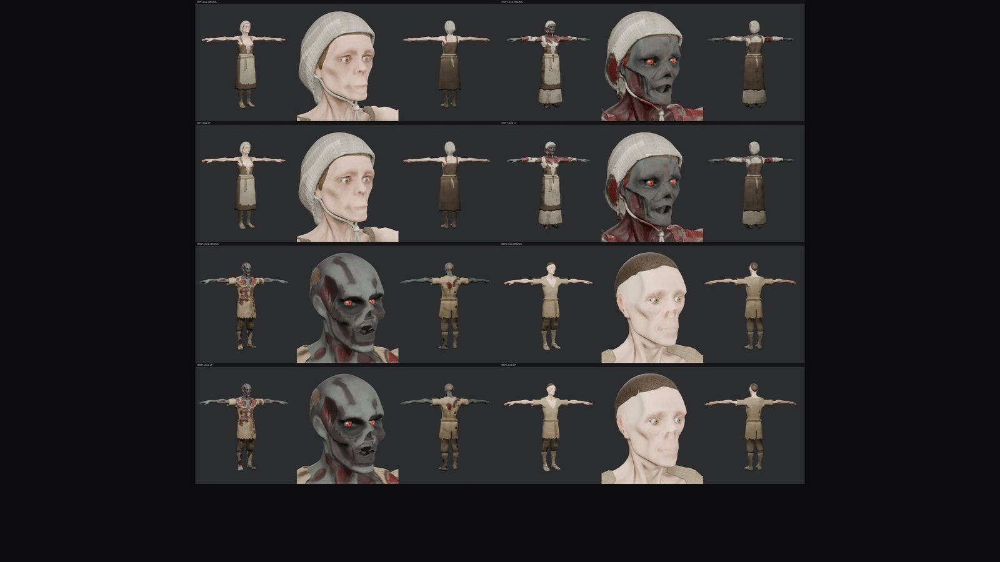
06Hair rules
Every flaw from Part 1 became a written rule with a measurement, and the tools check each rule automatically on every cap.
| # | Rule | Measurement |
|---|---|---|
| 1 | Hairline hugs the ear and never covers it | 0 to 3 mm from the ear outline |
| 2 | Top and front edges sit on the scalp | pinned 0.8 mm above the skin |
| 3 | Volume follows the skull with natural variation | no straight slopes |
| 4 | The back closes cleanly at the nape | no gap to the neck |
| 5 | Long hair rests on the body | ends 1.8 mm above shoulders and back |
| 6 | Beard mouth opening follows the lip | cut on the real lip line |

Overnight batch. With the rules written down, one night run traced the outline of each character's old hair cards and built 15 new caps with the rules applied, for the standard and the large body. Interior vertices were lifted at least 1.5 mm (hair) or 2.5 mm (beard) above the skin. Every cap came with a review sheet in eight views: front, left, back, right, both ears, three-quarter and three-quarter back.

Iteration. The batch was a starting point. Bedwyr's cap went from the overnight version 1 to an approved version 24, and Cynan's was approved at about 1,200 triangles. Every version kept its own number, so any of them could be restored.

07Review pass
Ten steps per hero, one hero at a time, and nothing is exported until it passes.
- Head check in Blender
- Hair cap check
- Beard check
- Mouth and eyes check
- Body joints check
- Blender sign-off
- FBX export
- Unreal import
- In-level check: a walk, a face check and a back view
- Approval
Characters go into the test level one at a time and come out after review. Owain was the first to pass.

The wrist fix came out of this pass. The hand and forearm textures had a tone step, a ring of strong tilt in the normal map, and a roughness step at the join. The fix rebuilt the textures only: base colour and roughness crossfade over about 11 cm of the forearm, and the low-frequency tilt in the normal map was removed around the seam. The mesh did not change.
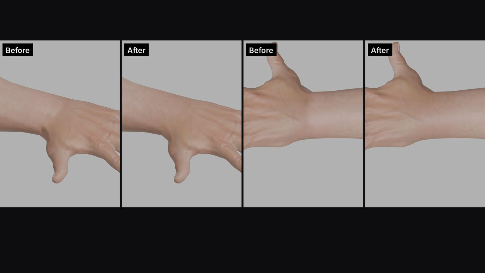
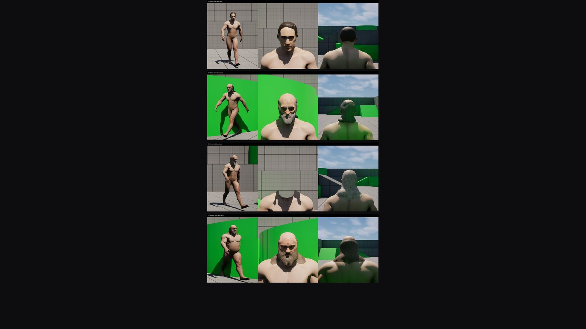
08Final hair and clothes
Hair version 7: shell plus strand cards. The shell-only hair saved the most, but lost detail at the hairline and edges up close. The final hair is a hybrid: the shell covers the head, and a small number of strand cards sit only where they show (hairline, edges, beard). Each character gets a procedural 2048 px strand atlas with clumps, waves, frizz and curl.
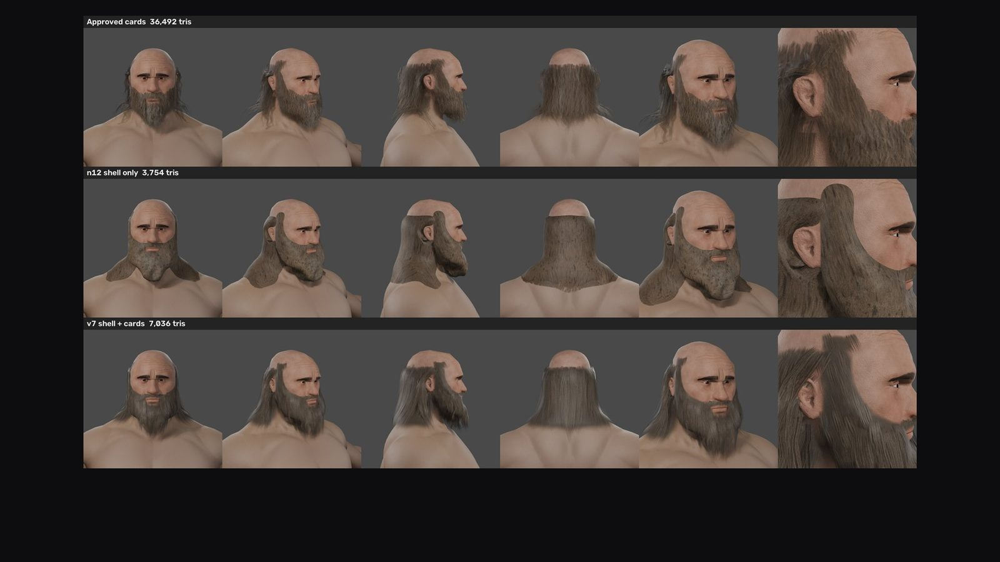
| Wulfstan hair and beard | Triangles |
|---|---|
| Approved cards (start) | 36,492 |
| Shell only | 3,754 |
| Shell plus strand cards (final) | 7,030 |
That is about a fifth of the starting cost, with the close-up detail kept. Across the cast, the final hair runs from about 4,000 to 9,000 triangles per character.
Levels of detail. Every skeletal mesh now has four LODs at 100, 50, 25 and 10 % of the triangles, switching at screen sizes of about 1.0, 0.5, 0.25 and 0.1. Facial shapes are kept on the first two LODs only; mouth parts and lashes drop from LOD 2. Strand cards are used at full detail only, and further away the character drops to the shell.
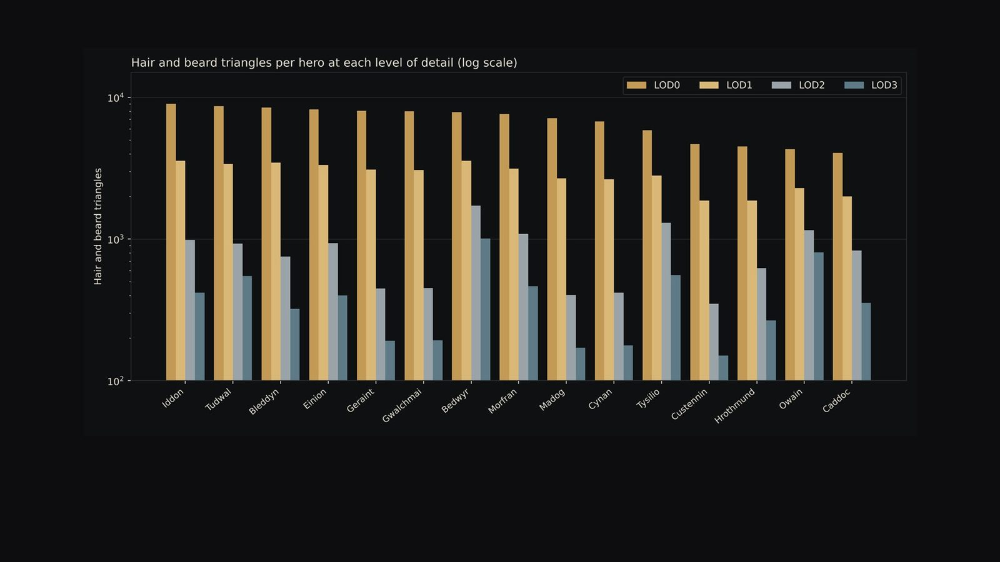
One garment kit. Instead of modelling clothes per character, one kit was built for the whole cast. Each piece is shaped from the body surface itself: body faces in the region are copied, pushed out along the normals by a fixed clearance, smoothed and cut at the hems. Then each piece is recoloured per character with a material tint.
| Garment | Triangles (standard body) | Offset from skin |
|---|---|---|
| Under-tunic | 9,375 | 1.2 cm |
| Tunic | 9,063 | 2.1 cm |
| Padded tunic | 8,863 | 3.2 cm |
| Trousers | 5,395 | 0.5 to 1.5 cm |
| Drawers | 2,711 | 0.3 to 0.55 cm |
| Leg wraps | 2,158 | 1.05 cm |
| Turnshoes | 2,496 | 0.9 cm |
| Belt | 692 | on the tunic |
| Cloak | 3,452 | body plus clothing, +2 cm |
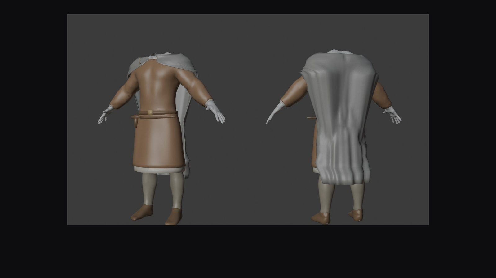
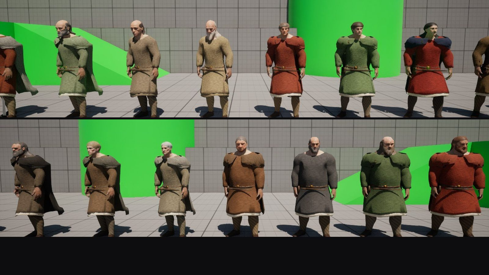
Cloaks hang on five bone chains and run on Kawaii Physics in Unreal (damping 0.2, stiffness 0.08, gravity -350, angle limit 45 degrees, collision from the body physics asset). Hidden skin under clothing is masked out so the engine does not draw what nobody can see.
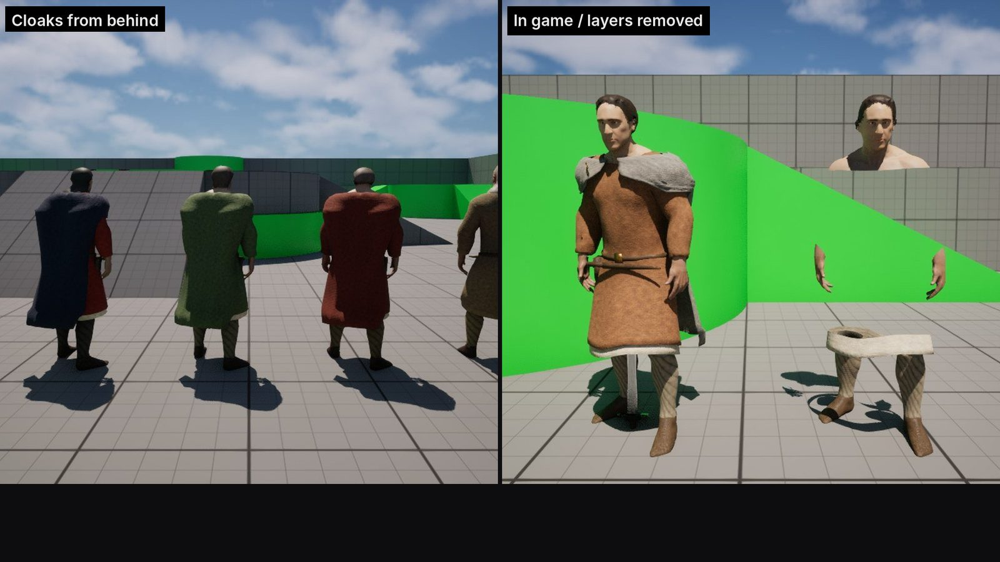
Prompts and instructions used
These are the instructions behind the overnight cap rebuild and the review loop, condensed from the session records.
1. No review or approval needed until finished. 2. Apply the hairline-around-ears rule and the natural-volume rule to every character. 3. Use the trace method: trace the volume of the original approved hair cards so the cap matches their outline. 4. Cap edges that meet the skull or face bend down and touch, or almost touch, the head. No floating edges. The bottom and back get more transparent toward the tips so they look organic and broken up. 5. No spikes on moustaches. Trace the cards for moustaches and beards too.
Scope: the 15 heroes after Owain. No background characters. Wulfstan: fix only where he breaks the rules. Blender only. No FBX export and no Unreal. I review first. Keep the old meshes hidden in the file for comparison. Triangle budget stays close to the current one. Ears: cover an ear only where the original cards covered it. Never put hair on the ear surface.
For each hero: 1. Open the right file. Show only body, head, eyes, lashes and the new hair. 2. Show me the review sheet plus the known issue for that hero. 3. Wait for my call: Approve, Edit, or Revert. 4. On Approve: tick the checklist, add a dated note, save, open the next hero. 5. On Edit: change the new hair object only, re-render as a new version, show it, wait again. Rules: - Do not export FBX or touch Unreal until all 15 are approved, unless I say so.
What we took from it
- Measure before you polish. The audit found what looking could not.
- Give every part a budget. Body, head, hair and beard each get a number.
- Turn every mistake into a rule, and let the tools check the rule.
- Review one character at a time, and export nothing that has not passed.
- Keep the old version until the new one is approved. Every master was backed up and every original mesh kept hidden in the file.
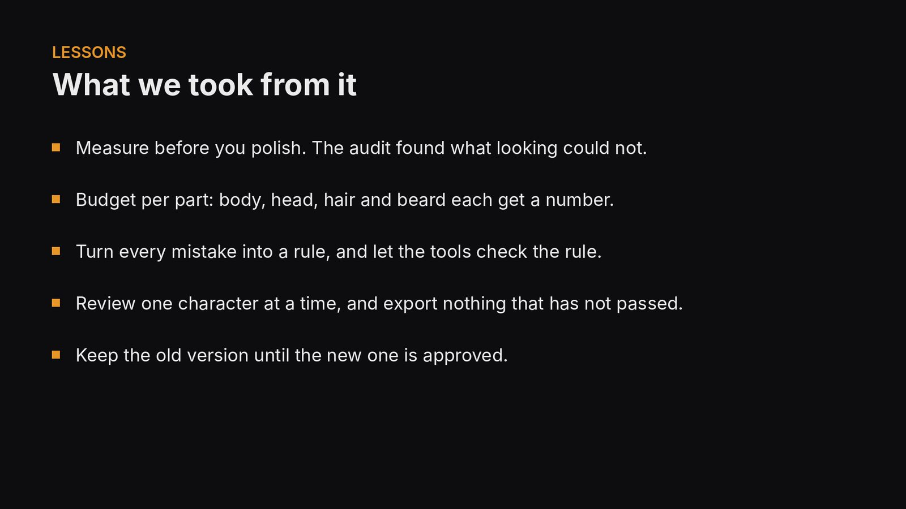
Try it yourself: checklist
- Pick a published budget (MetaHuman LOD spec works for Unreal) and measure every mesh against it.
- Count hair layers as well as triangles. Overdraw is the hidden cost.
- Reduce heads with a method that preserves shape keys, then check likeness side by side.
- Give background characters a harder cut with the face protected.
- Build LODs for every skeletal mesh; keep morphs on the first two only.
- Write each flaw as a rule with a number, and check it in code.
- Run batches unattended only after every decision is written down.
- Shape clothes from the body surface and recolour them per character.
Episode narration
Show the narration (condensed)
IntroWelcome back to KnightZ. In Episode 2 we look at the first way we built our characters, what went wrong once we put them all in the game, and how we rebuilt the process to make the cast you see today.
The auditEach character came in at about 93,000 triangles at full detail, and full detail was the only level we had. We measured against Epic's MetaHuman budgets. Twenty characters on screen came to 1.9 million triangles before shadows. Our hair was one and a half to three times over the card budget. There were no levels of detail. And each head carried about 43 megabytes of unique 4K textures.
Hair costWulfstan's approved hair and beard alone were 36,492 triangles. Hair cards are see-through layers, and ours stacked seven to ten deep. Every layer gets drawn for colour, for depth and for shadow, so the cost multiplies.
Close-up flawsThe wrist had a visible seam like a bracelet. Hair sat over the ears. Hair edges floated above the skin. Some caps looked like helmets. There were gaps at the back of the neck. Some beards covered the mouth by up to 2.3 centimetres.
Lighter charactersWe started with one test on Wulfstan: approved cards at 36,492 triangles against a single textured shell at about 4,000. Then the low-poly pass. Wulfstan went from 105,670 to 47,344. A typical hero went from about 93,000 to about 45,000. Background characters were cut harder, to 66 percent.
Hair rulesEvery mistake became a rule, and the tools check each rule automatically. With the rules written down, an overnight batch built fifteen new caps. Bedwyr went from his first overnight cap to version 24, the one we approved.
Review passTen steps per hero, one hero at a time. Five checks in Blender, a Blender sign-off, FBX export, Unreal import, an in-level check, and approval. The wrist seam was fixed here: three textures crossfade over 11 centimetres of the forearm, and the mesh did not change.
Final hair and clothesThe final hair is a hybrid: a shell plus strand cards only where they show. Wulfstan: approved cards 36,492, shell only 3,754, shell plus cards 7,030. One garment kit dressed fifteen characters. Cloaks run on Kawaii Physics, and covered skin is masked out.
LessonsMeasure before you polish. Give every part a budget. Turn every mistake into a rule. Review one character at a time. Keep the old version until the new one is approved.